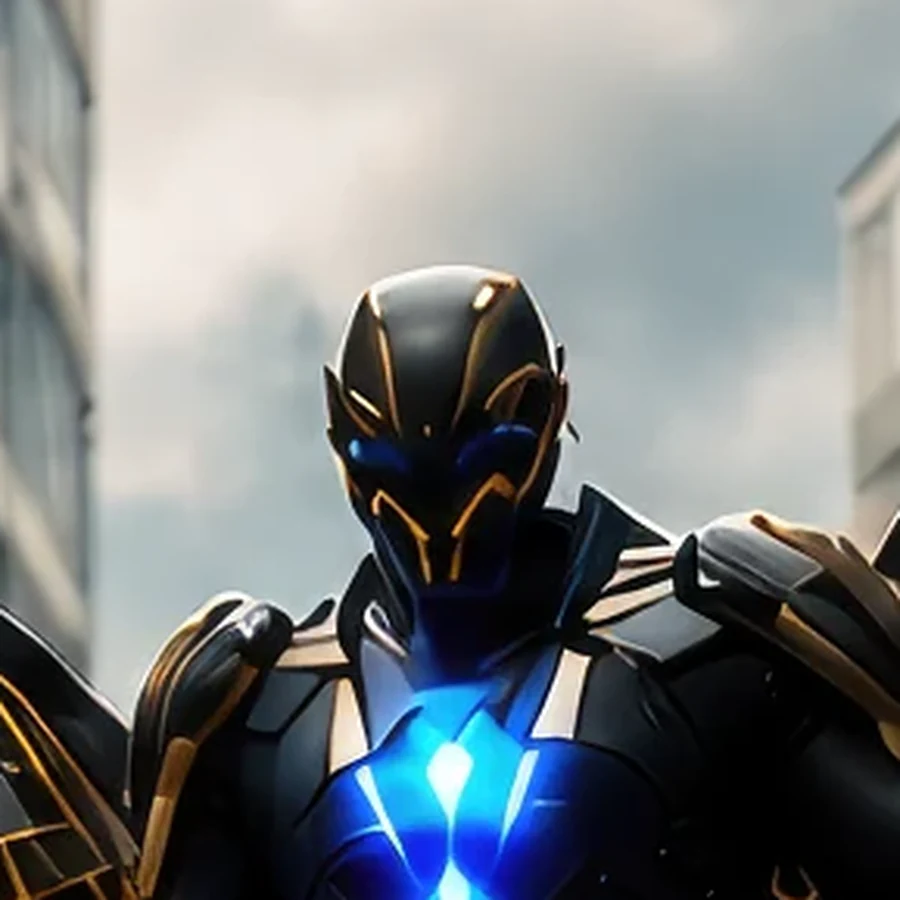
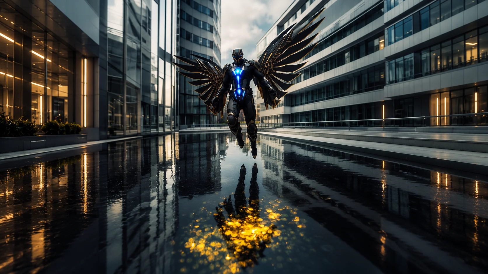
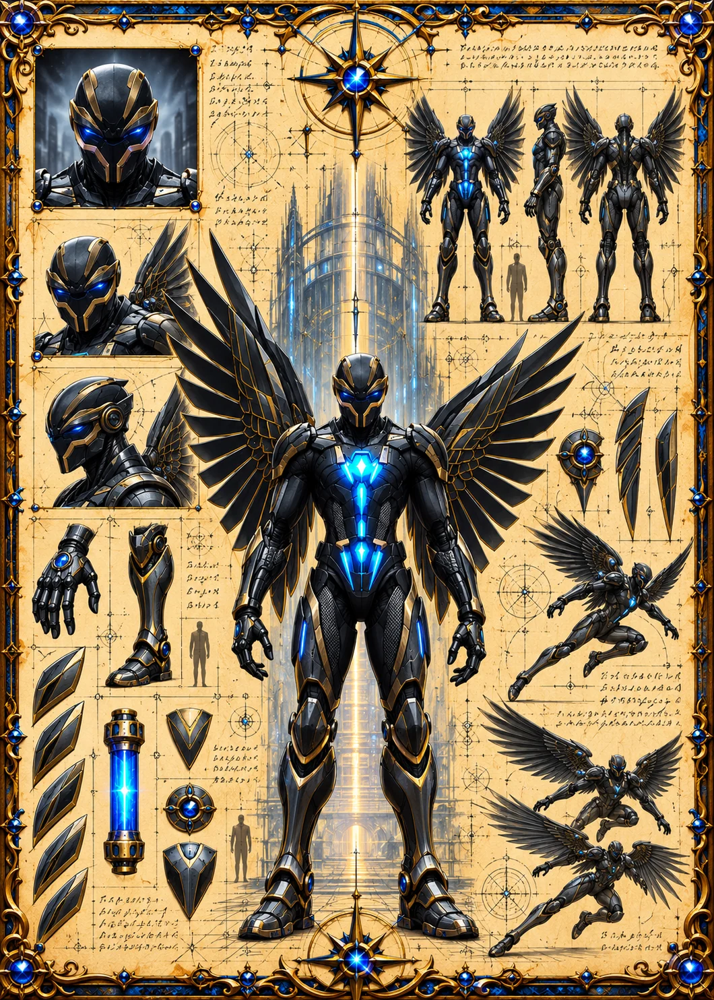

Field Observation
Joril discovers a cluster of alien red signal nodes near the lower middle of the boulevard. The nodes may mark an alien surveillance point embedded in Earth 1 infrastructure.

GENEZYS ARCHIVE · EARTH 1 · Legionnaire
Aurora Duelist
Identity & combat record
Archive node 01 / 05

Archive record
Joril trains under the polar sky, matching every jab to the rhythm of the aurora. Shields only make the Starline Jab hit harder, because the brightest light always finds the smallest gap. Joril swears that on the night the Beacon is lit, the aurora will answer too.
Combat signature
Surges sunlit firestorm: Reduces the target's Cosmara by 100. If the target's shield is ON, reduce an additional 30. Deals 50 damage.
Genezys 01:03 ™&©2026LEGIONS
Recovered visual record
Archive node 02 / 05

Full frame available // rotate device to landscape
Technical archive
Archive node 03 / 05

Classified field intelligence
Archive node 04 / 05
FIELD REPORT // SIGNAL TRACE
Classified search directiveFind the inconsistency hidden in this record
Field Observation
Joril discovers a cluster of alien red signal nodes near the lower middle of the boulevard. The nodes may mark an alien surveillance point embedded in Earth 1 infrastructure.
Environment
Object Analysis
Key Findings
Motion archive
Archive node 05 / 05
Motion record not yet recovered